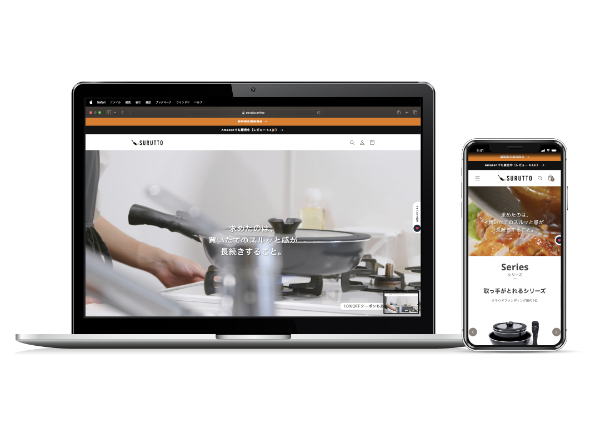
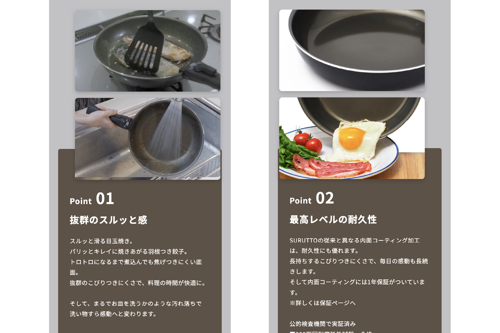
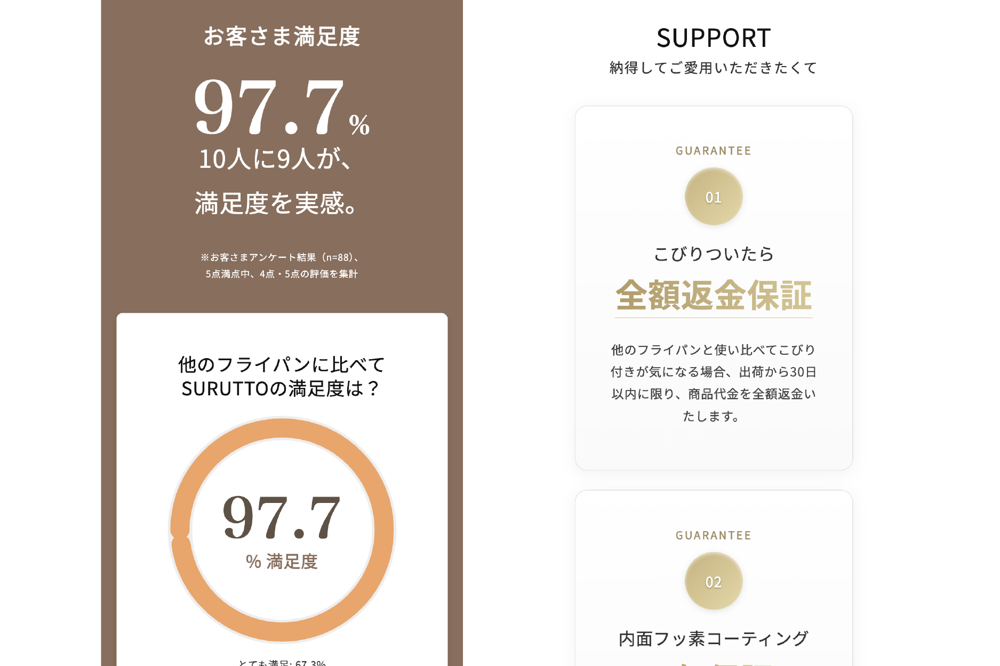
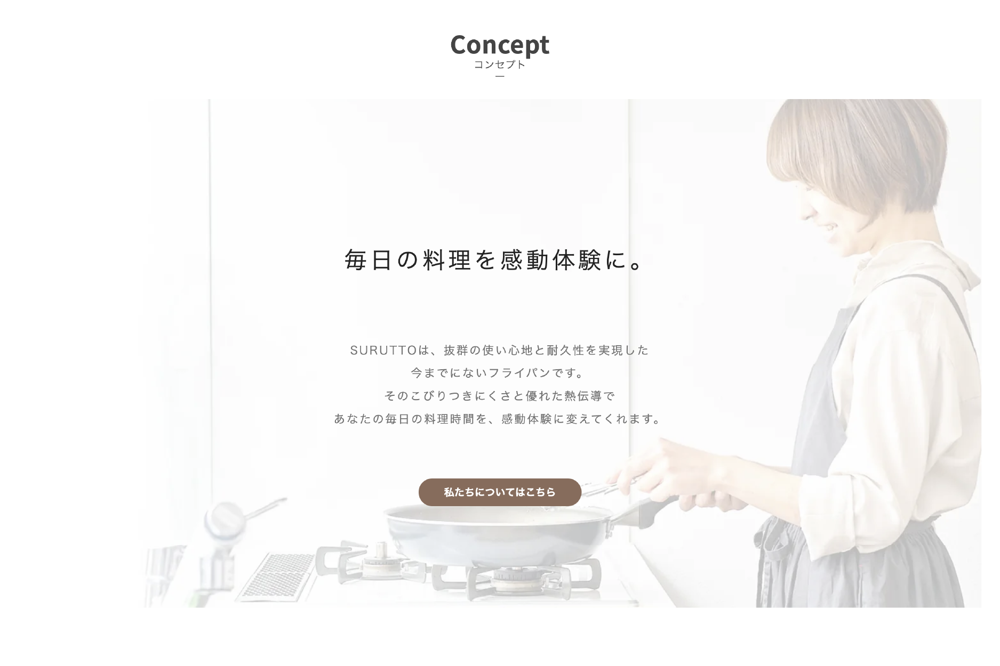
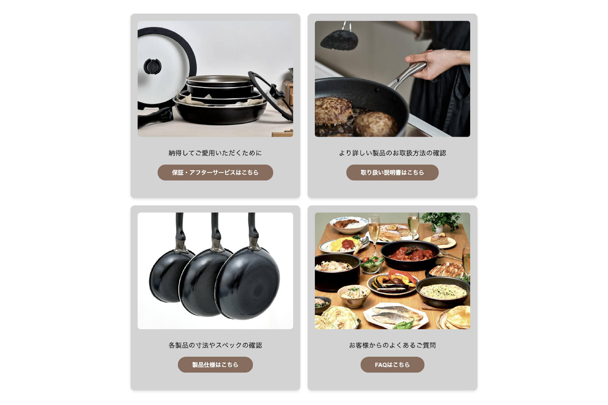

買いたてのスルッと感が長続きするフライパン（SURUTTO）｜Shopifyで制作

プロジェクト概要
販売戦略の設計からLP制作、継続的なCVR改善まで一貫支援
「SURUTTO」は、「買いたてのスルッと感が長続きする」という強みを持つフライパン。本プロジェクトでは、ターゲット分析と訴求設計 → Shopify上でのLP制作 → LPO・A/Bテストによる継続改善まで一貫して支援しています。
支援内容
Phase 1｜戦略設計
ターゲットユーザーの「フライパンはすぐ劣化する」という課題を起点に、「買いたてのスルッと感が長続きする」という訴求軸を設計。共感型ストーリーで購入意欲を高めるシナリオを策定しました。
Phase 2｜制作・構築
戦略に基づき、以下を実装しました。
・「こびりつかない vs こびりつく」の比較表現で機能差を直感的に訴求
・レビュー掲載・30日間返品保証・送料無料などで購入ハードルを低減
・スマホファーストの縦長デザインとCTA最適配置で購入導線を設計
Phase 3｜継続的な運用・改善支援
リリース後も以下の運用支援を継続しています。
・LPO（ランディングページ最適化）によるA/BテストとCVR改善
・広告運用データに基づくコピー・ビジュアルの調整
・SEO強化と集客導線の拡充
・季節・キャンペーンに合わせたページ更新と販促企画
デザインギャラリー




担当者コメント
ユーザーの悩みを起点にしたストーリー設計と、リリース後のLPO施策を組み合わせることで、購買率の向上につなげました。「作って終わり」ではなく、SEO強化・広告運用・A/Bテストを継続し、さらなるCVR向上を目指して伴走しています。